<!doctype html>
<html lang="en">
<head>
  <meta charset="utf-8">
  <meta name="viewport" content="width=device-width, initial-scale=1">
  <title>arxiv digest — 2026-10-13</title>
  <style>
:root {
  --bg: #ffffff;
  --fg: #1f2328;
  --muted: #59636e;
  --border: #d0d7de;
  --card: #f6f8fa;
  --link: #0969da;
}
body {
  max-width: 980px;
  margin: 0 auto;
  padding: 2rem 1rem 5rem;
  font-family: -apple-system, BlinkMacSystemFont, "Segoe UI", Helvetica, Arial, sans-serif;
  line-height: 1.55;
  color: var(--fg);
  background: var(--bg);
}
a { color: var(--link); }
img { max-width: 100%; height: auto; }
pre, code { background: var(--card); border-radius: 6px; }
pre { padding: 1rem; overflow-x: auto; }
blockquote { border-left: 4px solid var(--border); padding-left: 1rem; color: var(--muted); }
details { margin: 0.6rem 0; }
summary { cursor: pointer; font-weight: 600; }
.paper-figures-scroll {
  display: flex;
  gap: 1rem;
  overflow-x: auto;
  overscroll-behavior-x: contain;
  padding: 0.75rem 0.25rem 1rem;
  margin: 1rem 0 1.25rem;
  border-top: 1px solid var(--border);
  border-bottom: 1px solid var(--border);
  scroll-snap-type: x proximity;
}
.paper-figure-card {
  flex: 0 0 min(260px, 72vw);
  scroll-snap-align: start;
  background: var(--card);
  border: 1px solid var(--border);
  border-radius: 12px;
  padding: 0.55rem;
}
.paper-figure-card img {
  display: block;
  width: 100%;
  max-height: 240px;
  object-fit: contain;
  background: white;
  border-radius: 8px;
}
.paper-figure-caption {
  display: block;
  margin-top: 0.5rem;
  color: var(--muted);
  font-size: 0.85rem;
}
.figure-strip-hint {
  color: var(--muted);
  font-size: 0.9rem;
  margin-bottom: -0.3rem;
}
</style>
  <!-- MathJax: renders $...$ inline math and $$...$$ display math, plus
       \(...\) and \[...\]. Loaded from the official CDN; works offline
       once cached. Configured to skip code/pre blocks so arxiv IDs that
       look like dollar amounts don't get mangled. -->
  <script>
    window.MathJax = {
      tex: {
        inlineMath: [['$', '$'], ['\\(', '\\)']],
        displayMath: [['$$', '$$'], ['\\[', '\\]']],
        processEscapes: true,
        processEnvironments: true
      },
      options: {
        skipHtmlTags: ['script', 'noscript', 'style', 'textarea', 'pre', 'code'],
        ignoreHtmlClass: 'tex2jax_ignore',
        processHtmlClass: 'tex2jax_process'
      }
    };
  </script>
  <script id="MathJax-script" async
    src="https://cdn.jsdelivr.net/npm/mathjax@3/es5/tex-chtml.js"></script>
</head>
<body>
<header style="background-color: #333; color: white; padding: 15px; margin-bottom: 20px;">
  <h1 style="margin: 0; font-size: 24px;">
    <a href="https://ochelpan.github.io/arXiv_clean/" style="color: white; text-decoration: none;">Main</a>
  </h1>
</header>

<h1>Daily arXiv Report</h1>

<hr>
<p>
<a href="index.html">← Index</a>
 · <a href="papers_06.html">← Previous</a>
</p>
<hr>

<h2>Papers 121–125</h2>
<p><a id="paper-2610.13493"></a></p>
<h3 id="controlling-the-atomic-reconstruction-in-twisted-mosemath1120mathwsemath1121math-with-a-monolayer-hbn-spacer"><a href="http://arxiv.org/abs/2610.13493v1">Controlling the Atomic Reconstruction in Twisted MoSe$_2$/WSe$_2$ with a Monolayer hBN Spacer</a></h3>
<p><strong>Authors:</strong> Johannes Figueiredo, Kaiyuan Chen, Aubrey Penn, Mirco Troue, Sebastian Loy, Kenji Watanabe, Takashi Taniguchi, Frances M. Ross, Julian Klein, Alexander W. Holleitner<br>
<strong>Type:</strong> experiment · <strong>Category:</strong> other · <strong>PDF:</strong> <a href="https://arxiv.org/pdf/2610.13493v1">https://arxiv.org/pdf/2610.13493v1</a><br>
<strong>Analysis basis:</strong> full PDF text, analyzed in chunks</p>
<div class="figure-strip-hint">↔ Scroll figures horizontally</div>
<div class="paper-figures-scroll">
<figure class="paper-figure-card">
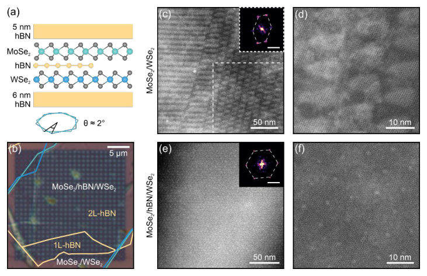
<figcaption class="paper-figure-caption"><b>Fig 1.</b> Figure 1: Atomic ordering in directly contacted and spacer-separated MoSe2/WSe2 heterobilayers. (a) Schematic cross section of the heterostructure, consisting of an hBN-encapsulated MoSe2/WSe2 bilayer that is partially separated by monolayer or bilayer hBN. While the TMD bilayer is rotated by ≈2°, the other layer rotations are random. (b) Optical micrograph of the sample. Scale bar, 5 µm. (c,d) Low- and medium-magnification HAADF- STEM images of the direct-contact region. The inset in (c) shows the FFT of the region outlined by the white dashed rectangle, yielding a distorted hexagonal arrangement of moiré peaks. Scale bar of inset, 0.1 nm-1. (e,f) Same as in (c,d), but for the...</figcaption>
</figure>
<figure class="paper-figure-card">
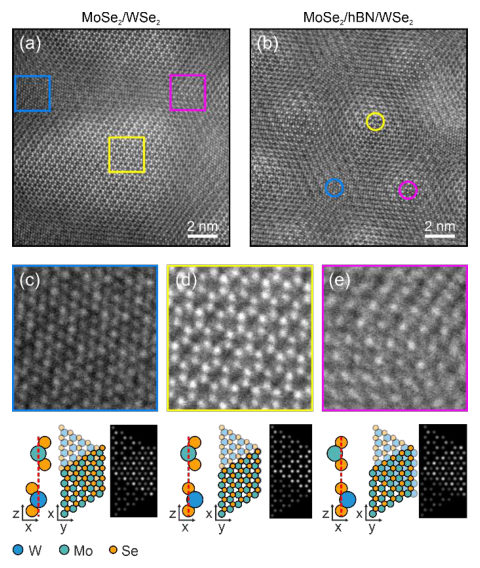
<figcaption class="paper-figure-caption"><b>Fig 2.</b> Figure 2: Atomic resolution HAADF-STEM of MoSe2/WSe2. (a) High-magnification HAADF-STEM image in the direct-contact region. The atomic reconstruction pattern features domains consisting of three high-symmetry crystallographic alignments outlined by the colored boxes. The domains are separated by domain walls with continuously changing atomic registries. (b) Same as in (a), but in the spacer-separated region. The image reveals an undisplaced lattice with smoothly varying atomic registry, where the high-symmetry points, marked by colored circles, occupy a periodic triangular moiré superlattice. (c,d,e) Magnified cutouts as marked in (a). The three atomic registries 𝐻𝑀</figcaption>
</figure>
<figure class="paper-figure-card">
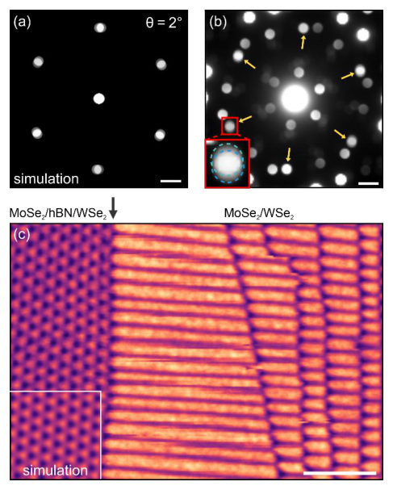
<figcaption class="paper-figure-caption"><b>Fig 3.</b> Figure 3: 4D-STEM on spacer-separated and direct-contact MoSe2/WSe2. (a) Simulated diffraction pattern of an antiparallel rigid MoSe2/WSe2 bilayer twisted by ≈ 2°. Scale bar, 1 nm-1. (b) Representative diffraction pattern. Yellow arrows mark the six symmetry-equivalent reciprocal-space positions where the MoSe2 and WSe2 Bragg discs overlap. The red inset shows an enlarged overlap region, with the two discs outlined by dashed circles. Scale bar, 1 nm-1. (c) Real-space map obtained by summing the diffraction intensity in the six Bragg-disc overlap regions at each probe position. The black arrow marks the approximate boundary between the spacer-separated region on the left and the...</figcaption>
</figure>
<figure class="paper-figure-card">
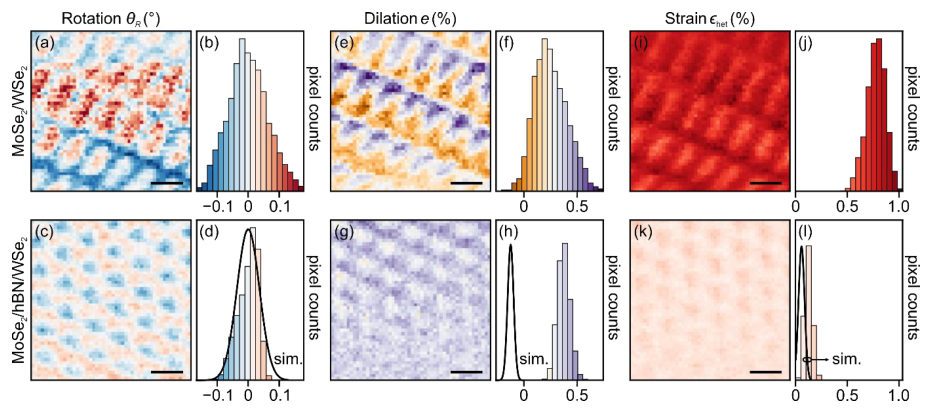
<figcaption class="paper-figure-caption"><b>Fig 4.</b> Figure 4: Quantitative 4D-STEM analysis of the local lattice transformation in MoSe2/WSe2. (a,b) Real-space map and corresponding histogram of the local rotation after subtracting the mean twist, 𝜃𝑅, in the direct-contact region. (c,d) Same as in (a,b), but for the spacer-separated region. The black curve in (d) shows the corresponding distribution obtained from an analogous analysis of a simulated rigid moiré MoSe2/WSe2 bilayer. (e)--(h) Same as in (a)--(d), but for the dilation 𝑒. (i)--(l) Same as in (a)--(d), but for the uniaxial heterostrain 𝜖ℎ𝑒𝑡. For each quantity, the maps and histogram bins share the same color scale. Scale bars, 10 nm.</figcaption>
</figure>
</div>
<p><strong>Summary.</strong> This work uses advanced STEM techniques to investigate atomic reconstruction in MoSe2/WSe2 heterobilayers. The key finding is that inserting an ultrathin hBN spacer effectively suppresses this reconstruction. This structural control enhances the lattice homogeneity, creating a more uniform moiré superlattice ideal for optoelectronic studies.</p>
<p><strong>Why it may be interesting.</strong> While focused on solid-state characterization, the ability to engineer structural uniformity at the atomic scale using an inert spacer layer is crucial for realizing predictable, high-quality quantum material platforms for exciton physics.</p>
<details>
<summary>Detailed structure</summary>
<p><strong>Main problem.</strong> The study addresses the issue of atomic reconstruction in near-aligned MoSe2/WSe2 heterobilayers, which degrades the lateral homogeneity required for studying collective exciton phenomena.</p>
<p><strong>Main result.</strong> The introduction of an ultrathin hBN spacer strongly suppresses this atomic reconstruction, leading to a highly uniform moiré superlattice structure that approaches ideal, rigid-moiré behavior.</p>
<p><strong>Method.</strong> The research employs advanced electron microscopy techniques, specifically HAADF-STEM and 4D-STEM, combined with quantitative analysis of local lattice transformations.</p>
<p><strong>Model / system.</strong> The physical system is the MoSe2/WSe2 van der Waals heterobilayer, investigated in two states: direct contact and separated by a monolayer or bilayer of hBN.</p>
<p><strong>Key observables.</strong> Local rotation, dilation, uniaxial heterostrain, moiré superlattice periodicity, and the visibility of specific atomic stacking registries (e.g., HX_M).</p>
<p><strong>Important parameters / regimes.</strong> The thickness of the spacer (1L or 2L hBN), and the degree of structural deviation from ideal rigid-moiré simulations.</p>
<p><strong>Assumptions / limitations.</strong> The analysis assumes that the structural parameters in the spacer-separated region can be compared against simulations of ideal, rigid moiré superlattices.</p>
<p><strong>Figures summary.</strong> Figures compare HAADF-STEM images showing reconstructed domains (direct contact) versus uniform superlattices (spacer-separated). 4D-STEM maps quantify the reduction in strain and rotation variability when the spacer is present.</p>
<p><strong>Paper structure.</strong> The paper systematically compares the structural disorder in direct-contact vs. hBN-spaced regions using STEM imaging, followed by quantitative mapping of local lattice distortions (rotation, strain) to demonstrate the spacer's homogenizing effect.</p>
</details>
<details>
<summary>Abstract</summary>
<p>Twisted van der Waals heterobilayers are a promising material platform for studying collective exciton many-body phenomena, but near-aligned structures often exhibit a local, anisotropic atomic reconstruction that compromises lateral homogeneity. The present study describes how atomic-scale rearrangement in adjacent regions of hBN-encapsulated, near-aligned MoSe$_2$/WSe$_2$ heterobilayers is controlled by the presence of a mono- or bilayer hBN spacer between the two monolayers. High-angle annular dark-field STEM directly resolves the atomic alignment in both layers and shows that the spacer suppresses the reconstruction and strongly increases the structural uniformity of the heterobilayers. 4D-STEM quantitatively maps local rotation, dilation, and heterostrain, revealing that the separated regions remain consistent with rigid moiré superlattice simulations, whereas without the spacer the structural parameters have two to three times broader distributions. By suppressing reconstruction, ultrathin hBN spacers therefore provide an effective route to enhance lattice homogeneity in MoSe$_2$/WSe$_2$ heterobilayers targeting collective excitonic and optoelectronic phenomena.</p>
</details>
<p><sub><a href="#top">↑ back to top</a></sub></p>

<p><a id="paper-2610.13124"></a></p>
<h3 id="electron-and-hole-doped-superconductivity-in-two-dimensional-electride-zrxmath1126math-x-cl-br-i"><a href="http://arxiv.org/abs/2610.13124v1">Electron- and hole-doped superconductivity in two-dimensional electride ZrX$_2$ (X = Cl, Br, I)</a></h3>
<p><strong>Authors:</strong> Tian-Xin Liu, Xin-Yang Li, Zuo-Wei Yin, Jing Jiang, Ben-Chao Gong, Wei Fan, Xiao-Le Qiu, Kai Liu<br>
<strong>Type:</strong> theory · <strong>Category:</strong> strongly correlated electrons · <strong>PDF:</strong> <a href="https://arxiv.org/pdf/2610.13124v1">https://arxiv.org/pdf/2610.13124v1</a><br>
<strong>Analysis basis:</strong> full PDF text, analyzed in chunks</p>
<div class="figure-strip-hint">↔ Scroll figures horizontally</div>
<div class="paper-figures-scroll">
<figure class="paper-figure-card">
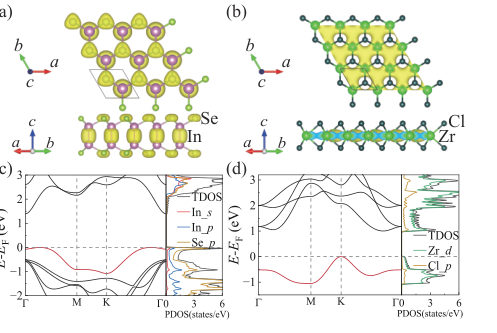
<figcaption class="paper-figure-caption"><b>Fig 1.</b> FIG. 1. Top and side views of monolayer (a) InSe and (b) ZrCl2. The yellow isosurface indicates the integrated charge densities (ICDs) of the topmost valence band. The isosurface of charge densities is set to 0.008 e/˚A3. Pink, light green, green, and blue-green balls represent In, Se, Zr, and Cl atoms, respectively. Band structure and density of states (DOS) of (c) InSe and (d) ZrCl2. The topmost valence band is high- lighted in red.</figcaption>
</figure>
<figure class="paper-figure-card">
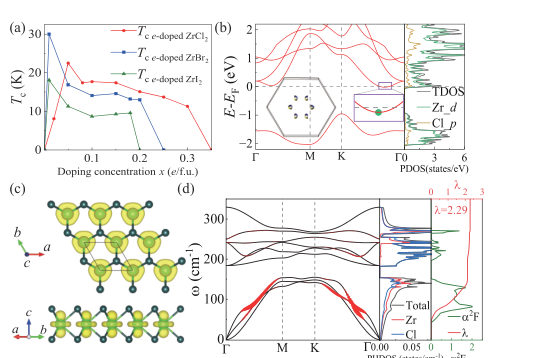
<figcaption class="paper-figure-caption"><b>Fig 2.</b> FIG. 2. (a) Superconducting Tc of monolayer ZrX2 (X = Cl, Br, I) as functions of electron doping concentration x. (b) Band structure, density of states and Fermi surface of monolayer ZrCl2 at x = 0.05 e/f.u. (c) The ICDs of the CBM, corresponding to the region indicated by green dots in the enlarged view of (b). The isosurface of charge densities is set to 0.015 e/˚A3. (d) Phonon dispersion, phonon density of states, Eliashberg spectral function α2F(ω), and electron- phonon coupling constant λ of monolayer ZrCl2 at x = 0.05 e/f.u.</figcaption>
</figure>
<figure class="paper-figure-card">
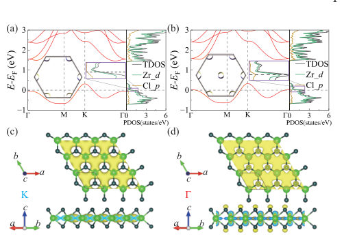
<figcaption class="paper-figure-caption"><b>Fig 3.</b> FIG. 4. Band structure and Fermi surface of ZrCl2 at (a) x = 0.15 h/f.u. and (b) x = 0.2 h/f.u. The ICDs of topmost valance band from (c) K point and (d) Γ point. The isosurface of charge densities is set to 0.01 e/˚A3.</figcaption>
</figure>
<figure class="paper-figure-card">
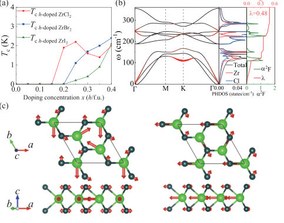
<figcaption class="paper-figure-caption"><b>Fig 4.</b> FIG. 3. (a) Superconducting Tc of monolayer ZrX2 (X = Cl, Br, I) as functions of hole doping concentration x. (b) Phonon dispersion and α2F(ω) of ZrCl2 at x = 0.2 h/f.u. The size of red dot is proportional to the phonon linewidth γqν. (c) Doubly degenerate phonon mode at K point (ω = 115 cm−1), obtained from a √</figcaption>
</figure>
<figure class="paper-figure-card">
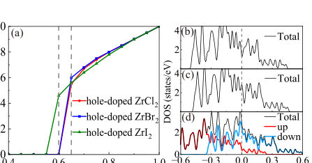
<figcaption class="paper-figure-caption"><b>Fig 5.</b> FIG. 5. (a) Total magnetic moment (µB/f.u.) of monolayer ZrX2 (X = Cl, Br, I) as functions of hole doping concentration x. NM DOS of monolayer ZrI2 at (b) x = 0.55 h/f.u. and (c) x = 0.60 h/f.u., FM DOS of monolayer ZrI2 at (d) x = 0.60 h/f.u.</figcaption>
</figure>
</div>
<p><strong>Summary.</strong> This theoretical study uses first-principles calculations to explore superconductivity in 2D electride materials, ZrX2. It demonstrates that electron doping can induce high critical temperatures ($T_c$) due to flat electronic bands, while hole doping results in much weaker superconductivity that eventually gives way to magnetic ordering. The findings establish ZrX2 as a promising, tunable platform for realizing bipolar superconductivity.</p>
<p><strong>Why it may be interesting.</strong> The work directly addresses high-$T_c$ superconductivity in a controllable, engineered 2D platform, which is a major area of interest in condensed matter theory, particularly concerning the interplay between electronic structure and pairing mechanisms.</p>
<details>
<summary>Detailed structure</summary>
<p><strong>Main problem.</strong> The study investigates the origin of bipolar superconductivity (superconductivity under both electron and hole doping) in simple, two-dimensional electride materials.</p>
<p><strong>Main result.</strong> Monolayer ZrX2 exhibits high-$T_c$ superconductivity upon electron doping, attributed to flat bands, while hole doping yields much lower $T_c$ and eventually leads to competing magnetic instabilities.</p>
<p><strong>Method.</strong> The research relies on first-principles calculations, including DFT, phonon calculations, and the evaluation of electron-phonon coupling (EPC) to determine superconducting critical temperatures ($T_c$).</p>
<p><strong>Model / system.</strong> The physical system is the monolayer electride ZrX2 (X = Cl, Br, I), which is modeled as a 2D semiconducting platform capable of hosting superconductivity when doped with excess electrons or holes.</p>
<p><strong>Key observables.</strong> Superconducting transition temperature ($T_c$), electron-phonon coupling constant ($\lambda$), Density of States ($N(\epsilon_F)$), and magnetic moment.</p>
<p><strong>Important parameters / regimes.</strong> Doping concentrations (e.g., 0.01 e/f.u. for high $T_c$), and the comparison between electron- and hole-doping regimes.</p>
<p><strong>Assumptions / limitations.</strong> The calculations assume the validity of the McMillan-Allen-Dynes formula for $T_c$ and that the structural stability can be confirmed by phonon and AIMD simulations.</p>
<p><strong>Figures summary.</strong> Figures illustrate the dependence of $T_c$ on doping for both electron and hole doping, showing the high $T_c$ dome for electrons and the suppression/instability for holes. Band structures and DOS highlight the role of flat bands near the conduction band minimum.</p>
<p><strong>Paper structure.</strong> The paper establishes the material platform, calculates $T_c$ vs. doping for both electron and hole doping, analyzes the physical origin of the asymmetry (flat bands vs. VBM), and concludes by positioning ZrX2 as a tunable platform for high-$T_c$ superconductors.</p>
</details>
<details>
<summary>Abstract</summary>
<p>Two-dimensional (2D) superconducting systems have recently emerged as a frontier in condensed matter physics, driven by their unique physical properties and potential applications. Using first-principles calculations, we show that monolayer ZrX$_2$ (X = Cl, Br, I), which is a family of 2D semiconducting electrides, hosts phonon-mediated superconductivity under both electron and hole dopings. Electron doping in ZrX$_{2}$ can achieve high superconducting transition temperatures at very low concentrations, with ZrBr$_2$ reaching $T_c = 30.0$ K at 0.01 \textit{e}/f.u., followed by ZrCl$_2$ (22.5 K at 0.05 \textit{e}/f.u.) and ZrI$_2$ (18.1 K at 0.01 \textit{e}/f.u.), for which the high $T_c$ originates from the flat conduction band minimum, with Van Hove singularities nearby enhancing the density of states. In contrast, hole doping requires higher concentrations (0.2--0.25 \textit{h}/f.u.) to activate superconductivity, yielding $T_c \sim 2$ K, and approaches a magnetic instability at elevated doping levels. By comparing with InSe and LaBr$_2$, we identify the spatial location and orbital character of excess electrons as key factors determining the strength of hole-doped superconductivity and the nature of competing orders. These findings establish monolayer ZrX$_2$ as a platform for bipolar superconductivity in a 2D electride and provide insights into flat-band engineering for high-$T_c$ superconductors.</p>
</details>
<p><sub><a href="#top">↑ back to top</a></sub></p>

<p><a id="paper-2610.13017"></a></p>
<h3 id="parity-anomalous-hall-response-of-chiral-lifshitz-fermions"><a href="http://arxiv.org/abs/2610.13017v1">Parity-Anomalous Hall Response of Chiral Lifshitz Fermions</a></h3>
<p><strong>Authors:</strong> Yanmiao Han, Rundong Zhao, Yu-Hao Wan<br>
<strong>Type:</strong> theory · <strong>Category:</strong> other · <strong>PDF:</strong> <a href="https://arxiv.org/pdf/2610.13017v1">https://arxiv.org/pdf/2610.13017v1</a><br>
<strong>Analysis basis:</strong> full PDF text, analyzed in chunks</p>
<div class="figure-strip-hint">↔ Scroll figures horizontally</div>
<div class="paper-figures-scroll">
<figure class="paper-figure-card">
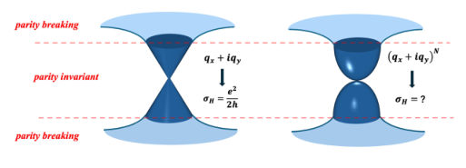
<figcaption class="paper-figure-caption"><b>Fig 1.</b> FIG. 1. Hall response for a linear Dirac cone and a chiral Lifshitz fermion. The red dashed lines separate the parity-invariant low- energy window from the parity-breaking high-energy lattice sectors. For the linear cone with coupling qx + iqy, the anomalous response is σH = e2/2h. For the chiral Lifshitz fermion with coupling (qx + iqy)N, the response marked by the question mark is deter- mined in Sec. II.</figcaption>
</figure>
<figure class="paper-figure-card">
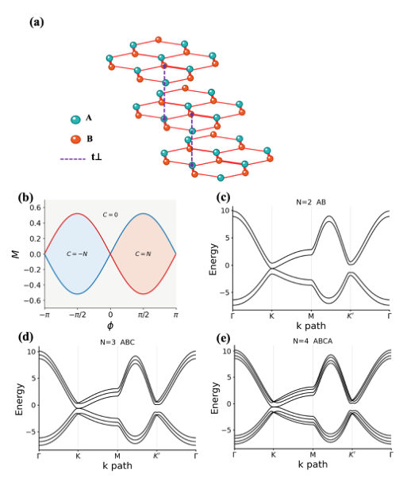
<figcaption class="paper-figure-caption"><b>Fig 2.</b> FIG. 2. Multilayer Haldane model. (a) Stacked honeycomb lattice; the two colors denote the A and B sublattices, and the purple dashed bonds denote the interlayer dimer hopping t⊥. (b) Phase diagram of the N-layer model in the (ϕ, M) plane; the critical lines M = ± √</figcaption>
</figure>
<figure class="paper-figure-card">
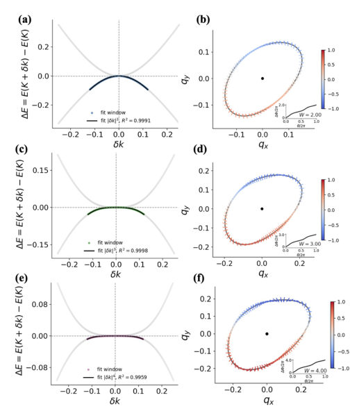
<figcaption class="paper-figure-caption"><b>Fig 3.</b> FIG. 3. Dispersion and winding number of the gapless cone at the K valley for the AB (top row), ABC (middle row), and ABCA (bottom row) stacks. (a), (c), (e) Power-law fits ∆E ∝|δk|n of the middle- band dispersion within the fit window, giving n = 2, 3, and 4. (b), (d), (f) Projected pseudospin textures d′(q) on the constant-energy contours CK: the arrows show the in-plane components (d′ x, d′ y) and the color shows d′ z. The insets give the unwrapped phase of d′ x +id′ y along the contour, yielding W = 2, 3, and 4 from Eq. (18).</figcaption>
</figure>
<figure class="paper-figure-card">
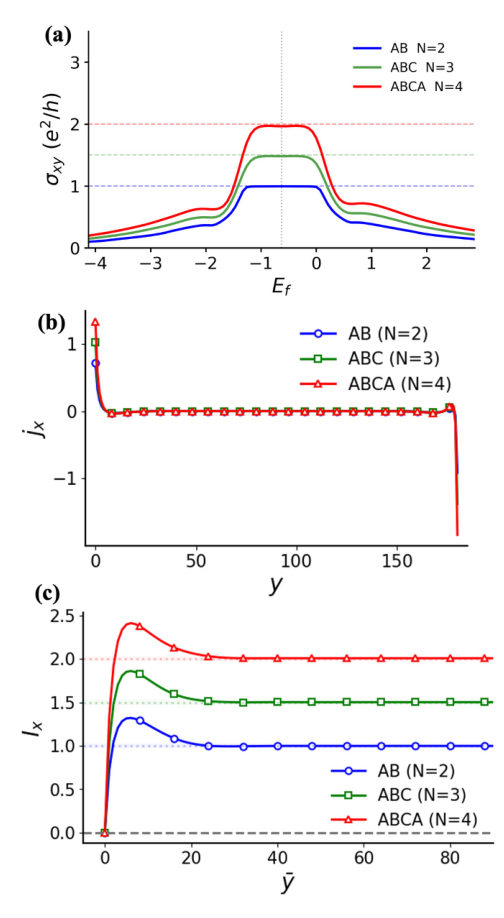
<figcaption class="paper-figure-caption"><b>Fig 4.</b> FIG. 4. Hall response and equilibrium current. (a) Kubo Hall con- ductance σxy(EF) of the AB, ABC, and ABCA stacks, with plateaus at 1, 3/2, and 2 in units of e2/h; the vertical dotted line marks the gapless energy EK. (b) Row-resolved equilibrium current density jx(y) at E = −0.5, calculated in a strip periodic along x and of width Ly = 180; the current is localized at the two boundaries. (c) Integrated current Ix(E, ¯y) at the same energy, which converges to W/2 = 1, 3/2, and 2 for the three stacks.</figcaption>
</figure>
<figure class="paper-figure-card">
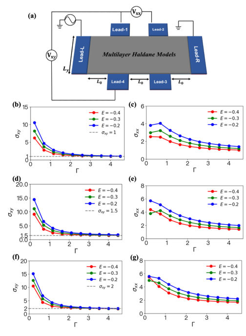
<figcaption class="paper-figure-caption"><b>Fig 5.</b> FIG. 5. Dephasing-assisted six-terminal transport. (a) Hall-bar ge- ometry: Lead-L and Lead-R are the source and drain, and Leads- 1–4 are voltage probes attached at x = Lx/3 and 2Lx/3, with Lx = 300, Ly = 150, and L0 = Lx/3. Each voltage probe contacts eight complete stack cells, the virtual-probe grid spacing is four unit cells, and the wide-band couplings are γlr = 1.0 and γprobe = 0.5. (b), (d), (f) Hall conductivity σxy versus dephasing strength Γ for the AB, ABC, and ABCA stacks at EF = −0.4, −0.3, and −0.2; the dashed lines mark W/2 = 1, 3/2, and 2. (c), (e), (g) Corresponding longitudinal conductivity σxx, which remains finite.</figcaption>
</figure>
</div>
<p><strong>Summary.</strong> This paper analyzes the anomalous Hall response in chiral Lifshitz fermions, extending the concept from Dirac fermions. By modeling the system using multilayer Haldane lattices, the authors show that the Hall conductivity is quantized based on the Fermi-loop winding number ($W/2$). This establishes a winding-controlled mechanism distinct from conventional topological insulators.</p>
<p><strong>Why it may be interesting.</strong> This work provides a concrete, higher-order topological mechanism for quantized anomalous Hall effects, linking it directly to the winding number of the Fermi surface rather than just the bulk Chern number.</p>
<details>
<summary>Detailed structure</summary>
<p><strong>Main problem.</strong> The study investigates the parity-anomalous Hall response when the low-energy excitations are described by chiral Lifshitz fermions, representing a generalization beyond the standard massless Dirac fermion.</p>
<p><strong>Main result.</strong> The anomalous Hall response is found to be quantized at $\sigma_{	ext{anom}}^{xy} = (W/2)e^2/h$, where $W$ is the Fermi-loop winding number, confirming a winding-controlled generalization of the anomaly.</p>
<p><strong>Method.</strong> The response is calculated using the Kubo formula, supplemented by analyzing the pseudospin winding number ($W$) derived from the low-energy Hamiltonian and confirmed via boundary current calculations.</p>
<p><strong>Model / system.</strong> The system is modeled using two-dimensional chiral Lifshitz fermions, realized in a lattice context via multilayer Haldane models tuned to a valley-selective critical line, isolating a single gapless chiral fermion.</p>
<p><strong>Key observables.</strong> Anomalous Hall response ($\sigma_{	ext{anom}}^{xy}$), Fermi-loop winding number ($W$), and longitudinal conductivity ($\sigma_{xx}$).</p>
<p><strong>Important parameters / regimes.</strong> The winding number $W$ (which equals $N$ for the $N$-th order Lifshitz fermion) and the stacking sequence of the Haldane layers (e.g., AB, ABC, ABCA).</p>
<p><strong>Assumptions / limitations.</strong> The analysis relies on the necessity of a parity-breaking high-energy lattice regularization to define the low-energy chiral node, and it distinguishes this response from a standard Quantum Anomalous Hall insulator.</p>
<p><strong>Figures summary.</strong> Figure 1 compares the linear Dirac cone response to the chiral Lifshitz fermion response. Figure 6 illustrates the Smrčka–Streda decomposition of the intrinsic bulk Hall conductivity for the ABC stack.</p>
<p><strong>Paper structure.</strong> The paper establishes the anomaly for Dirac fermions, generalizes the concept to chiral Lifshitz fermions using a specific low-energy Hamiltonian, calculates the response based on the winding number $W$, and validates this result using multilayer Haldane models and Kubo calculations.</p>
</details>
<details>
<summary>Abstract</summary>
<p>The parity anomaly of a single massless Dirac fermion is manifested as a half-quantized Hall response once the required parity-breaking regularization is supplied. We study the corresponding response for two-dimensional chiral Lifshitz fermions. For a node with low-energy coupling (qx +iqy)^N, the Fermi-loop winding number W = N gives an anomalous Hall response σxy^anom = (W/2)e^2/h. We examine this mechanism in chiral multilayer Haldane models tuned to a valley-selective critical line, where a single gapless chiral Lifshitz fermion remains at the K valley. For the AB, ABC, and ABCA stacks, the projected pseudospin textures give W = 2, 3, 4, while Kubo calculations yield σxy = (1, 3/2, 2)e^2/h; integrated equilibrium boundary currents reproduce the same W/2 sequence. Six-terminal simulations with dephasing further show that the Hall conductivity is quantized at W/2 while the longitudinal conductivity remains finite. These results identify gapless chiral Lifshitz fermions as a higher-order, winding-controlled generalization of the parity-anomalous Hall response, distinct from a quantum anomalous Hall insulating state even when W/2 is an integer.</p>
</details>
<p><sub><a href="#top">↑ back to top</a></sub></p>

<p><a id="paper-2610.12791"></a></p>
<h3 id="realizing-two-dimensional-altermagnets-with-100-spin-polarization-along-the-110-direction-in-ambidentate-ligand-based-square-organometallic-lattices"><a href="http://arxiv.org/abs/2610.12791v1">Realizing Two-Dimensional Altermagnets with 100% Spin Polarization along the [110] Direction in Ambidentate-Ligand Based Square Organometallic Lattices</a></h3>
<p><strong>Authors:</strong> Qing-Bo Liu, Xin-Yi Chen, Xiangyang Li, Xingxing Li, Jinlong Yang<br>
<strong>Type:</strong> theory · <strong>Category:</strong> other · <strong>PDF:</strong> <a href="https://arxiv.org/pdf/2610.12791v1">https://arxiv.org/pdf/2610.12791v1</a><br>
<strong>Analysis basis:</strong> full PDF text, analyzed in chunks</p>
<div class="figure-strip-hint">↔ Scroll figures horizontally</div>
<div class="paper-figures-scroll">
<figure class="paper-figure-card">
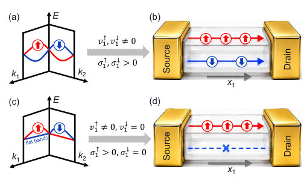
<figcaption class="paper-figure-caption"><b>Fig 1.</b> FIG. 1. Schematic illustration of spin-dependent transport in altermagnets. (a) A conventional altermagnet with k- dependent spin splitting along two arbitrary reciprocal-space directions, k1 and k2. Both spin-up and spin-down bands are dispersive, giving rise to finite group velocities (v↑ 1, v↓ 1 ̸= 0) and conductivities (σ↑ 1, σ↓ 1 &gt; 0) along the x1 direction, where x1 denotes the real-space direction corresponding to k1. (b) Corresponding transport schematic along the x1 direction, with red and blue channels representing spin-up and spin- down conduction, respectively. (c) A new altermagnet with coexisting spin-split dispersive and flat bands. Along the k1 direction, the dispersive...</figcaption>
</figure>
<figure class="paper-figure-card">
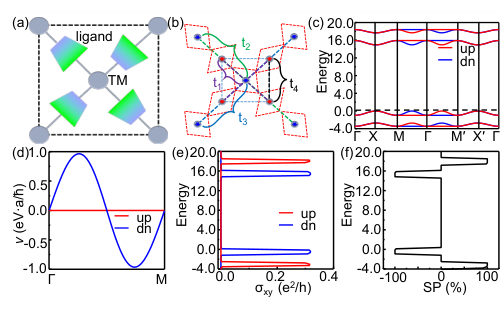
<figcaption class="paper-figure-caption"><b>Fig 2.</b> FIG. 2. Tight-binding model, band structures, and spin- transport properties. (a) Altermagnetic state in a 2D square lattice containing ambidentate ligands, with opposite spins located at lower-symmetry TM sites. Red and blue arrows indicate spin-up and spin-down, respectively, and gradient- colored trapezoids denote the ambidentate ligands. (b) Hop- ping processes on the square lattice: t1 (purple line), nearest- neighbor hopping between opposite-spin sites; t2 (royal blue line) and t3 (green line), next-nearest-neighbor hoppings be- tween same-spin sites; t4 (black line), nearest-neighbor hop- ping between same-spin sites. The ambidentate ligands give rise to t2 = t3. (c) Tight-binding...</figcaption>
</figure>
<figure class="paper-figure-card">
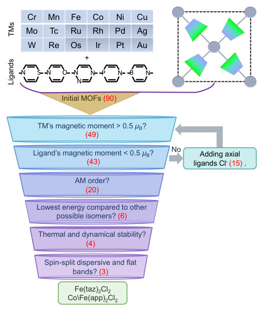
<figcaption class="paper-figure-caption"><b>Fig 3.</b> FIG. 3. Screening workflow for 2D altermagnetic (AM) MOFs. Based on 18 TM elements and 5 kinds of ambiden- tate ligands, we constructed 90 two-dimensional MOFs and screened out three altermagnetic candidates: Fe(taz)2Cl2, Co(app)2Cl2, and Fe(app)2Cl2.</figcaption>
</figure>
<figure class="paper-figure-card">
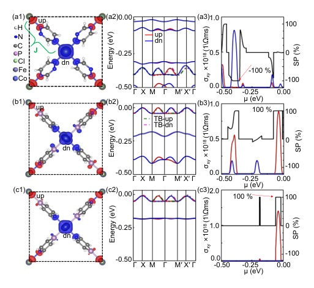
<figcaption class="paper-figure-caption"><b>Fig 4.</b> FIG. 4. (a1)-(c1) Crystal structures and spin-density dis- tribution with an isovalue of 0.003 ˚A −3 of Fe(taz)2Cl2, Co(app)2Cl2, and Fe(app)2Cl2, where red and blue isosur- faces denote the spin-up and spin-down components, respec- tively; J labels the exchange interaction between neighboring TMs. White, blue, black, purple, green, gray, and royal blue spheres denote H, N, C, P, Cl, Fe, and Co. (a2)-(c2) Band structures of Fe(taz)2Cl2, Co(app)2Cl2, and Fe(app)2Cl2 be- low the Fermi level. The red and blue solid lines represent the spin-up and spin-down bands calculated by DFT, respec- tively, while the green and pink dashed lines denote the corre- sponding bands fitted using the TB model....</figcaption>
</figure>
</div>
<p><strong>Summary.</strong> This work proposes a novel chemical strategy using ambidentate ligands to construct 2D altermagnetic organometallic lattices. By engineering the electronic structure to feature coexisting dispersive and flat spin-split bands, the authors demonstrated the realization of 100% spin polarization along the [110] direction in three specific materials. This paves the way for designing next-generation spintronic devices.</p>
<p><strong>Why it may be interesting.</strong> The concept of altermagnetism and achieving perfect spin polarization via structural engineering in MOFs is highly relevant to spintronics and quantum materials research, bridging magnetism and electronic transport in a controllable solid-state manner.</p>
<details>
<summary>Detailed structure</summary>
<p><strong>Main problem.</strong> The primary goal is to develop a feasible chemical strategy to design two-dimensional (2D) altermagnets that exhibit 100% spin polarization along a specific crystallographic direction, such as [110].</p>
<p><strong>Main result.</strong> The authors successfully identified three promising organometallic candidates ($   ext{Fe}(    ext{taz})_2 ext{Cl}_2$, $   ext{Co}(    ext{app})_2 ext{Cl}_2$, and $   ext{Fe}(    ext{app})_2 ext{Cl}_2$) that realize this state, demonstrating direction-dependent full spin polarization in their valence bands.</p>
<p><strong>Method.</strong> The study combines theoretical modeling using a tight-binding (TB) approach with first-principles calculations (DFT/PBE+U) to screen and characterize the electronic and magnetic properties of candidate materials.</p>
<p><strong>Model / system.</strong> The physical system consists of 2D square lattice organometallic lattices built using ambidentate ligands. The theoretical framework involves a modified tight-binding Hamiltonian designed to capture the altermagnetic spin-splitting mechanism.</p>
<p><strong>Key observables.</strong> 100% spin polarization along [110], spin-dependent transport ($\sigma_{xy}$), piezomagnetic response (net magnetic moment under strain), and the coexistence of dispersive and flat bands.</p>
<p><strong>Important parameters / regimes.</strong> The key mechanism relies on the coexistence of a highly dispersive band in one spin channel and a flat band in the other, which suppresses transport in one spin channel.</p>
<p><strong>Assumptions / limitations.</strong> The mechanism relies on the structural modification provided by ambidentate ligands, which breaks inversion symmetry and induces the necessary spin-splitting.</p>
<p><strong>Figures summary.</strong> Figures illustrate the spin-dependent transport mechanisms, showing how the combination of dispersive and flat bands leads to 100% spin polarization along the [110] direction. Band structures and spin-resolved conductivity ($\sigma_{xy}$) are key diagnostic tools.</p>
<p><strong>Paper structure.</strong> The paper progresses from defining the challenge (designing 100% spin-polarized altermagnets) to proposing a chemical strategy (ambidentate ligands), detailing the theoretical model (TB Hamiltonian), presenting the screening workflow (90 candidates), and finally confirming the results with three specific, highly polarized materials.</p>
</details>
<details>
<summary>Abstract</summary>
<p>Altermagnetism, as a novel magnetic paradigm, not only possesses a zero net magnetic moment, but also exhibits a substantial nonrelativistic spin-splitting effect. Currently, developing a simple and experimentally feasible method for designing altermagnets is eagerly pursued. Moreover, achieving 100% spin polarization along certain directions in valence or conduction bands for altermagnets remains challenging. To address these issues, based on a tight-binding model, we propose a viable chemical strategy for constructing organometallic altermagnets by using ambidentate ligands. Furthermore, in these organometallic altermagnets, direction-dependent 100% spin polarization along the [110] direction in band edges can be induced via the coexistence of altermagnetically spin-split dispersive and flat bands, where the flat band suppresses electron transport in one spin channel and the dispersive band enables conduction in the other spin channel. Then, via first-principles calculations, a screening of 90 two-dimensional ambidentate-ligand based square organometallic lattices leads to the identification of three altermagnetic materials, namely Fe(taz)2Cl2 (taz = 1,2,4- triazine), Co(app)2Cl2, and Fe(app)2Cl2 (app = 1,4-azaphosphinine), all of which possess 100% spin polarization along the [110] direction in valence bands, as well as notable piezomagnetic behavior. This study paves the way for achieving direction-dependent fully spin-polarization in altermagnetic materials.</p>
</details>
<p><sub><a href="#top">↑ back to top</a></sub></p>

<p><a id="paper-2610.12746"></a></p>
<h3 id="the-quantum-geometry-of-the-chemical-bond"><a href="http://arxiv.org/abs/2610.12746v1">The quantum geometry of the chemical bond</a></h3>
<p><strong>Authors:</strong> Gabrielle Carrel, Nishchhal Verma, Fatmagül Katmer, Leslie M. Schoop, Raquel Queiroz<br>
<strong>Type:</strong> theory · <strong>Category:</strong> other · <strong>PDF:</strong> <a href="https://arxiv.org/pdf/2610.12746v1">https://arxiv.org/pdf/2610.12746v1</a><br>
<strong>Analysis basis:</strong> full PDF text, analyzed in chunks</p>
<div class="figure-strip-hint">↔ Scroll figures horizontally</div>
<div class="paper-figures-scroll">
<figure class="paper-figure-card">
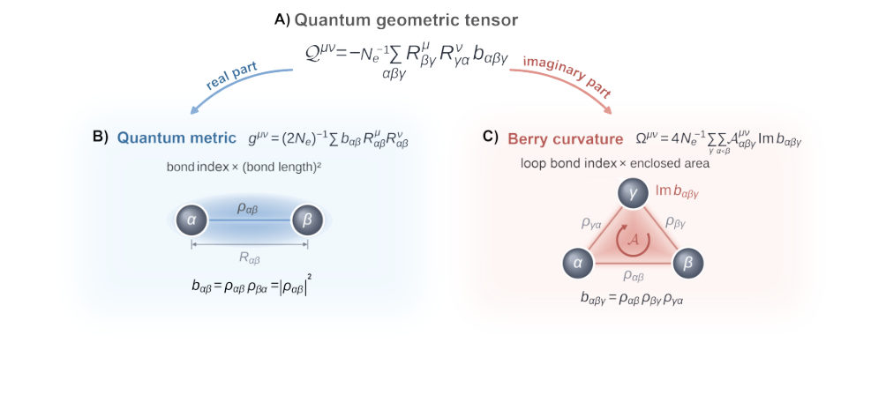
<figcaption class="paper-figure-caption"><b>Fig 1.</b> Figure 1: Chemical bonds build the quantum geometric tensor. (A) The QGT built from bonds. Every orbital is placed at the position of its atom, and bond vectors connect the atoms. The QGT is a sum over closed paths through three orbitals, α →β →γ →α. The product of the density-matrix elements along each path gives the three-center bond index bαβγ, weighted by products of bond-vector components. (B) The tensor’s real part, the quantum metric, reduces to a sum over two-center bond indices, bαβ = |ραβ|2. The metric per electron weights each bond index by bond-vector components, with the normalization of Eq. 1. Its trace weights each index by squared bond length, increasing with sharing at...</figcaption>
</figure>
<figure class="paper-figure-card">
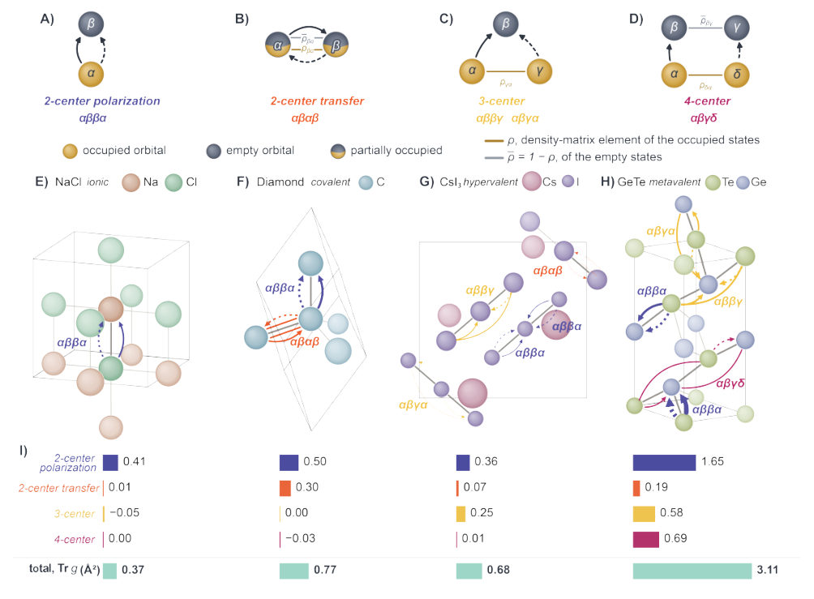
<figcaption class="paper-figure-caption"><b>Fig 2.</b> Figure 2: Bond contributions to electronic fluctuations. (A–D) Representative fluctuation patterns for two-center polarization (αββα), two-center transfer (αβαβ), three-center (αββγ), and four-center (αβγδ) contributions. For the virtual transition from occupied ψn to empty ψm, the solid arrow δ →γ represents ⟨ψm|vν γδ|ψn⟩. The dashed arrow α →β represents ⟨ψm|vµ βα|ψn⟩, which enters Eq. 3 complex conjugated as ⟨ψn|vµ αβ|ψm⟩. Connecting lines represent elements of the occupied-state density matrix ρ and its empty-state complement ¯ρ = 1 −ρ, indicating coherent sharing of the filled and empty states across the orbitals, respectively. (E–H) Fluctuation diagrams of ionic NaCl, covalent...</figcaption>
</figure>
<figure class="paper-figure-card">
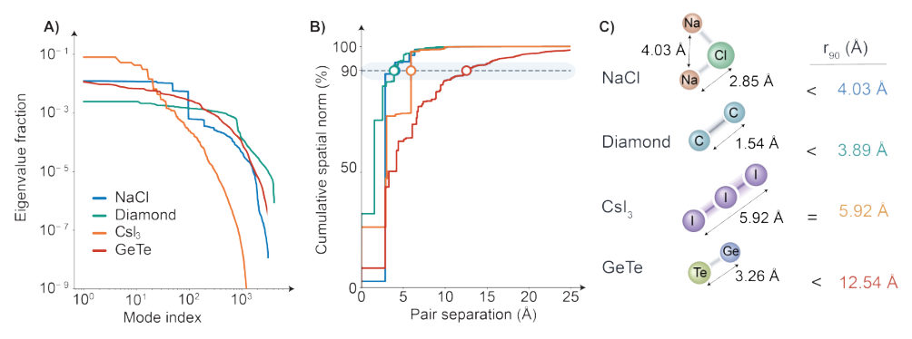
<figcaption class="paper-figure-caption"><b>Fig 3.</b> Figure 3: Fluctuation spectra and spatial range. (A) Eigenvalues of the full bond-bond fluctuation matrix, normalized by their sum. The full response has orthogonal eigenmodes, but a fluctuation motif can combine several of them. Their normalized transition kernels give the probability associated with each ordered pair of atomic sites and relative lattice displacement. (B) Cumulative weight of each selected fluctuation as a function of the distance between the two atomic sites. The circles mark r90, the distance enclosing 90% of its normalized weight; the curves include the full distribution. (C) Comparison of r90 with representative atomic separations and the iodine-trimer length. The...</figcaption>
</figure>
<figure class="paper-figure-card">
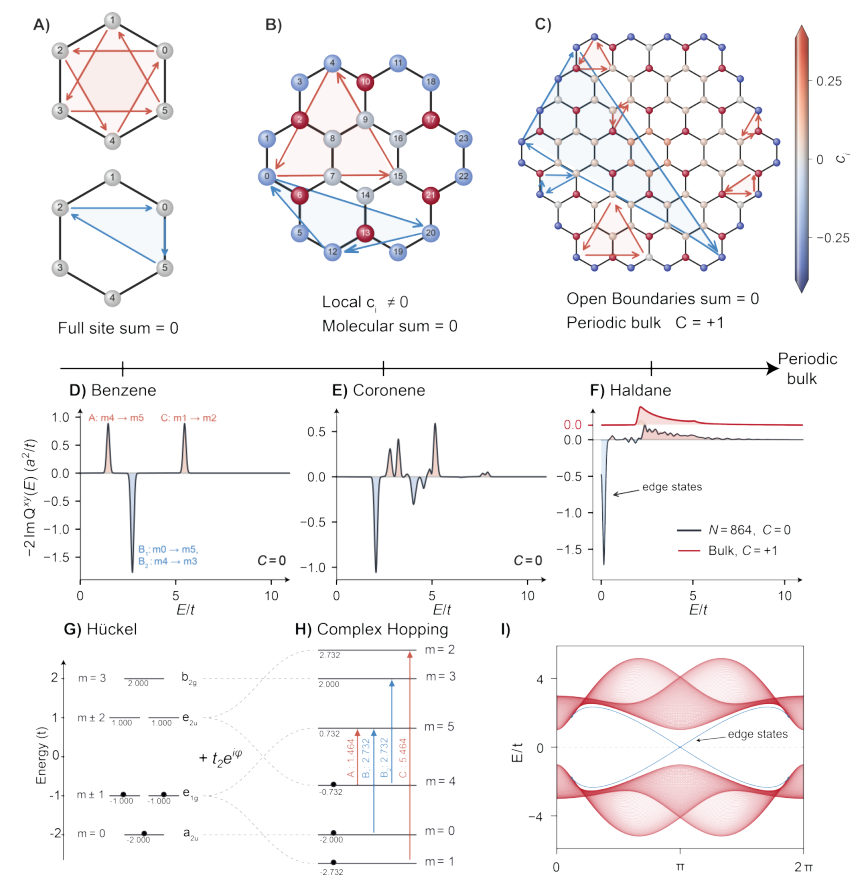
<figcaption class="paper-figure-caption"><b>Fig 4.</b> Figure 4: From bond loops to the Chern number of a crystal. (A–C) Signed geometric loop contributions on benzene, coronene and a 96-site flake; arrows denote directed bonds. Normalized site sums obey P i ci = C for the periodic sample; complete finite-system sums vanish. (D–F) Curvature spectra −2 Im Qxy(E) per electron, in a2/t. Red minus blue area gives the loop sum of Eq. 2. Multiplying by excitation energy gives the transverse absorptive conductivity, with prefactors in the supplementary text (section S10). In benzene and coronene, the positive and negative spectral areas cancel. In (F), the periodic bulk (red, offset) has C = +1; the 864-site flake (black) has an edge peak just above...</figcaption>
</figure>
</div>
<p><strong>Summary.</strong> This work develops a theoretical framework linking the quantum geometry of electronic states to chemical bonding motifs using the Quantum Geometric Tensor (QGT). It demonstrates that the QGT captures bonding character, distinguishing between ionic, covalent, and hypervalent bonds through specific fluctuation patterns. Crucially, it shows that topological features like the Chern number require the periodicity of a crystal, not just a finite molecule.</p>
<p><strong>Why it may be interesting.</strong> The deep connection drawn between local chemical bonding motifs and global topological properties (Chern number) provides a powerful, geometry-based framework for predicting electronic properties in materials, which is highly relevant for designing novel quantum materials.</p>
<details>
<summary>Detailed structure</summary>
<p><strong>Main problem.</strong> The paper aims to formally relate chemical bonding descriptions (like bond orders) to the quantum geometry of electronic states, thereby bridging chemical and physical descriptions of solids.</p>
<p><strong>Main result.</strong> The quantum geometric tensor (QGT) quantifies bonding, showing that topological invariants like the Chern number are only non-zero in periodic solids, and that extended bonding fundamentally changes the dominant electronic fluctuations compared to molecular systems.</p>
<p><strong>Method.</strong> The authors use $ab$ initio methods to compute the QGT, decomposing it into contributions from two-, three-, and four-center bond correlations, and relating these to measurable optical responses.</p>
<p><strong>Model / system.</strong> The study analyzes electronic states in molecules (e.g., benzene) and periodic solids (e.g., lattices), using the one-particle reduced density matrix ($
ho_{\alphaeta}$) and the orbital-center approximation.</p>
<p><strong>Key observables.</strong> Quantum Geometric Tensor (QGT), Quantum Metric ($\mathbf{g}<em>{\mu
u}$), Berry Curvature ($\Omega</em>{\mu
u}$), Bond Indices (two- and three-center), Chern Number ($C$), and optical conductivity ($\sigma_{abs}$).</p>
<p><strong>Important parameters / regimes.</strong> Bonding motifs (ionic, covalent, hypervalent, metavalent), excitation energy ($E$), and the spatial extent of fluctuations ($r_{90}$).</p>
<p><strong>Assumptions / limitations.</strong> The analysis relies on the orbital-center approximation and an independent-electron description, neglecting excitonic and local-field effects.</p>
<p><strong>Figures summary.</strong> Figures illustrate how the QGT is built from bonds, showing the quantum metric from two-center bonds and the Berry curvature from three-center bonds weighted by oriented area. Other figures compare fluctuation patterns and spectra across different materials.</p>
<p><strong>Paper structure.</strong> The paper progresses by first relating QGT to bond indices, then analyzing how bond fluctuations characterize different bonding types (ionic vs. covalent), and finally comparing the quantum geometry in finite molecules versus extended periodic lattices.</p>
</details>
<details>
<summary>Abstract</summary>
<p>Electronic properties of materials depend both on band energies and quantum geometry of electronic states. We relate bonding indices to the quantum geometric tensor (QGT), showing how chemical bonding dictates the momentum-space texture of bands, bridging chemical and physical descriptions of solids. We show the QGT decomposed into the three center bond index, weighted by their oriented area. Resolving these contributions by orbital pair reveals the donor--acceptor character that distinguish ionic, covalent, hypervalent, and metavalent bonding. We identify the bonding pattern for topology in materials: noncollinear three center bonds, which are the source of Berry curvature in solids. Bond fluctuation can be directly linked to electromagnetic response by resolving their energy spectrum, opening a quantitative route towards the design of physical properties of materials from bonding motifs.</p>
</details>
<p><sub><a href="#top">↑ back to top</a></sub></p>
</details>

<hr>
<p>
<a href="index.html">← Index</a>
 · <a href="papers_06.html">← Previous</a>
</p>
<hr>

</body>
</html>
